La crèche d'Heemelmaus Belval (Agrément ministériel SEAJ 20190190 du 2 janvier 2019) est un service d'éducation et d'accueil pour enfants âgés de 2 mois à 4 ans.
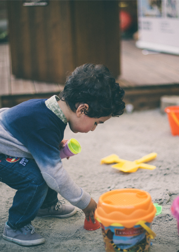
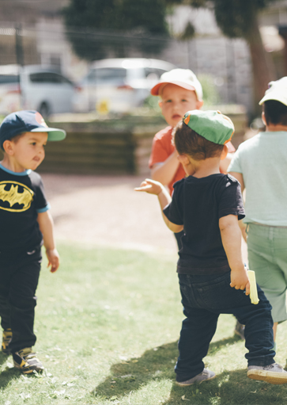
L'accueil éducatif d'Heemelmaus- Agrément ministériel SEAS 20190380 est un service d'éducation et d'accueil pour enfants âgés de 3 à 6 ans géré par le CIGL Esch asbl.
La maison relais d'Heemelmaus (Agrément ministériel MR 410/3 du 11 septembre 2012) est un service d'éducation et d'accueil pour enfants âgés de 4 à 12.
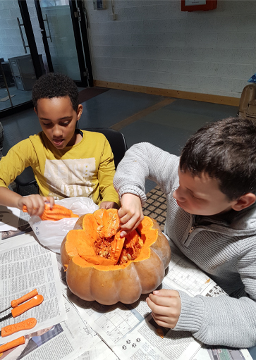
Le projet Vël'Ok met à disposition des vélos en libre-service dans neuf communes du Sud du Luxembourg : Esch-sur-Alzette, Differdange, Sanem, Schifflange, Dudelange, Rumelange, Bettembourg, Kayl et Mondercange.
Projet de production de légumes biologiques et d'animations en éducation à l'Environnement à Esch-sur-Alzette
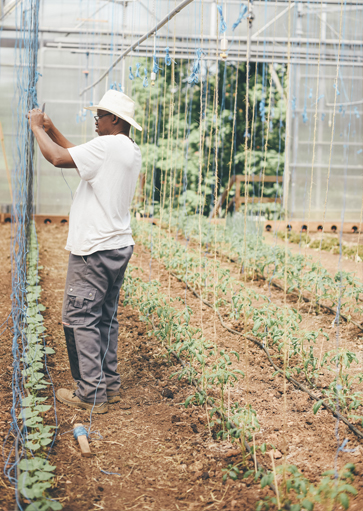
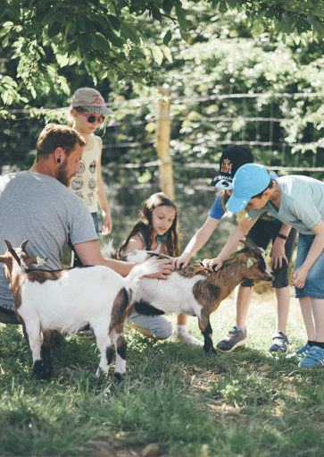
Projet de production de légumes biologiques et d'animations en éducation à l'Environnement à Altwies
Projet Interreg pour l'insertion socioprofessionnelle et de développement de « villes comestibles » dans la Grande Région (Luxembourg, Wallonie, Sarre, Rhénanie-Palatinat, Lorraine).
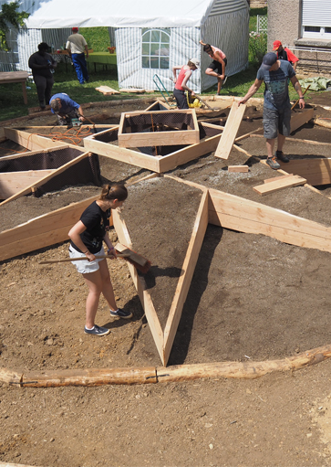
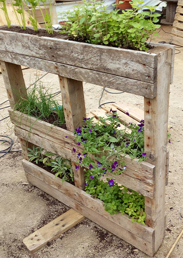
Le projet Rec'UP consiste à récupérer et utiliser des matériaux divers considérés comme « déchets » et leur donner une « seconde vie » en considérant ceux-ci comme de la matière première pour des créations originales.
Services de ménage variés (nettoyage, lessive, repassage, courses) à titre ponctuel ou régulier, auprès de résidents d'Esch-sur-Alzette de plus de 60 ans ou dépendants.
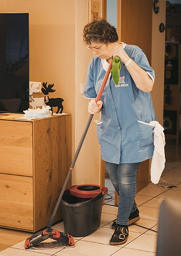
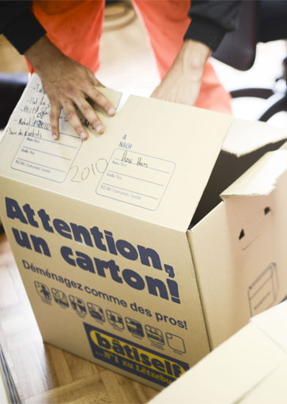
Service de proximité pour petits travaux de bricolage, jardinage, recyclage, déblayage de neige, entretien des tombes,… à titre ponctuel ou régulier, auprès de résidents d'Esch-sur-Alzette.
Gestion et exploitation de la Brasserie Camping's Stuff » au Gaalgebierg.
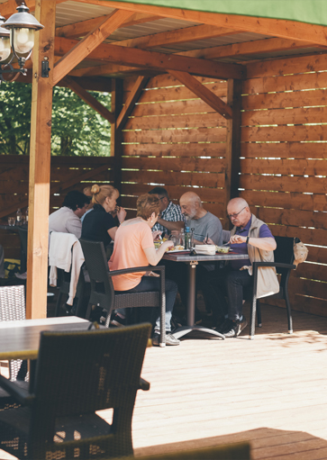
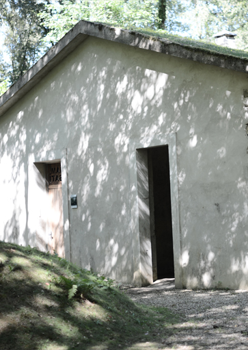
Le CIGL assure la gestion du refuge pour randonneurs.
Aménagements et entretiens d'espaces verts et d'espace naturels.
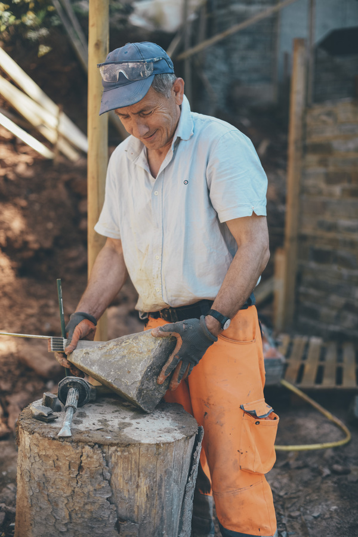
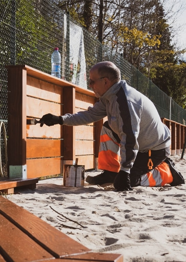
Conception et réalisation de constructions durables.
Zil ass et, en Netz vu pedagogesche Gäert opzebauen, fir d'Kreatioun an d'didaktesch Notzung vun dëse Gäert ze ënnerstëtzen, mat enger fachlëcher Begleedung vun allen Akteuren.
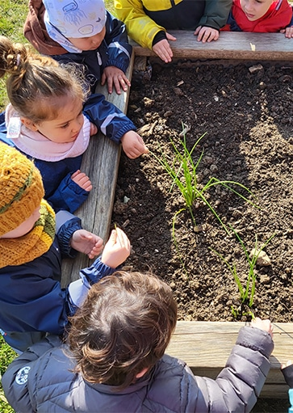